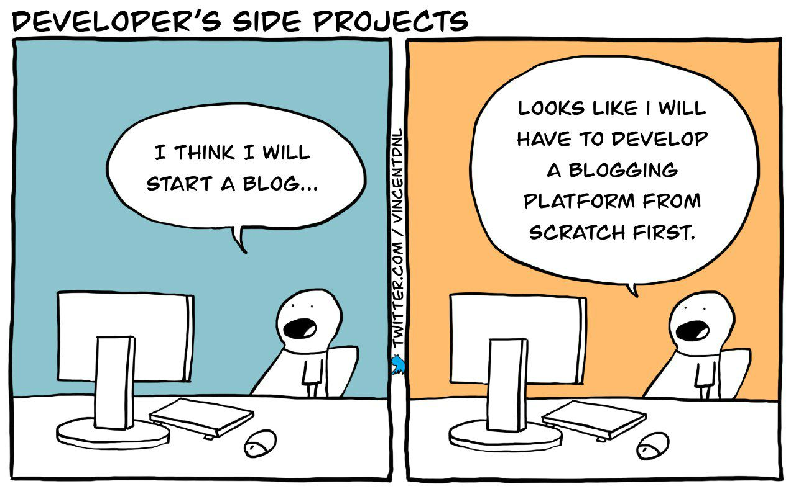

About me
My name is Miika, I'm a programmer and a Linux/UNIX enthusiast. I particularly enjoy learning new paradigms of programming languages and finding simple, efficient solutions.
I am currently studying Information and Communication Technology at HAMK UAS, Finland. I am also working as a Junior Software Developer at Tawasta OS Technologies. My work revolves around building open source business solutions for Odoo, business management software, using a stack of Python, Javascript, XML/SCSS.
When I'm not programming or working with computers, I enjoy lifting weights, reading and being in nature.
My website
My website's publishing method has migrated from an automated bash script, to Emacs Org-mode and now to a Makefile based static website generator (mblog). Throughout these changes my goal has remained the same: to make a simple static blog website, no JavaScript, no excessive CSS, but a distraction free place to share my ideas and guides about technology.
This meme by @vincentdnl is an accurate depiction of my thought process for this site:
